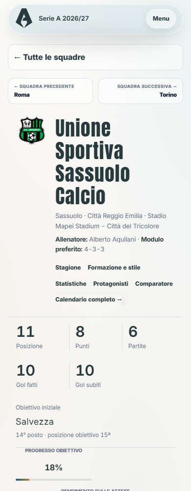
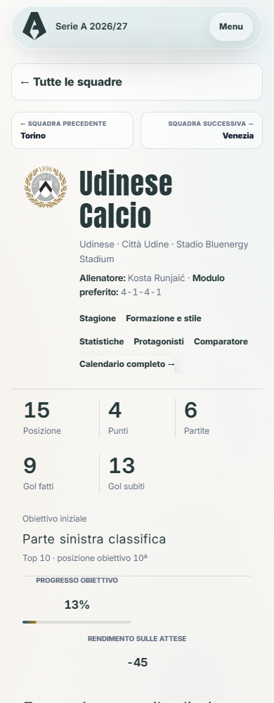

<style>body{margin:12px;background:#d7e0e8;font:15px system-ui}main{display:grid;grid-template-columns:repeat(4,1fr);gap:12px}figure{margin:0;min-width:0}figcaption{height:40px;font-weight:600}img{width:100%;height:auto;display:block}</style><main><figure><figcaption>32 · statistiche-squadra/sassuolo.html</figcaption></figure><figure><figcaption>33 · statistiche-squadra/torino.html</figcaption></figure><figure><figcaption>34 · statistiche-squadra/udinese.html</figcaption></figure><figure><figcaption>35 · statistiche-squadra/venezia.html</figcaption></figure><figure><figcaption>36 · champions-league.html?team=aek-athens</figcaption></figure><figure><figcaption>37 · champions-league.html?team=arsenal</figcaption></figure><figure><figcaption>38 · champions-league.html?team=aston-villa</figcaption></figure><figure><figcaption>39 · champions-league.html?team=atletico-de-madrid</figcaption></figure></main>